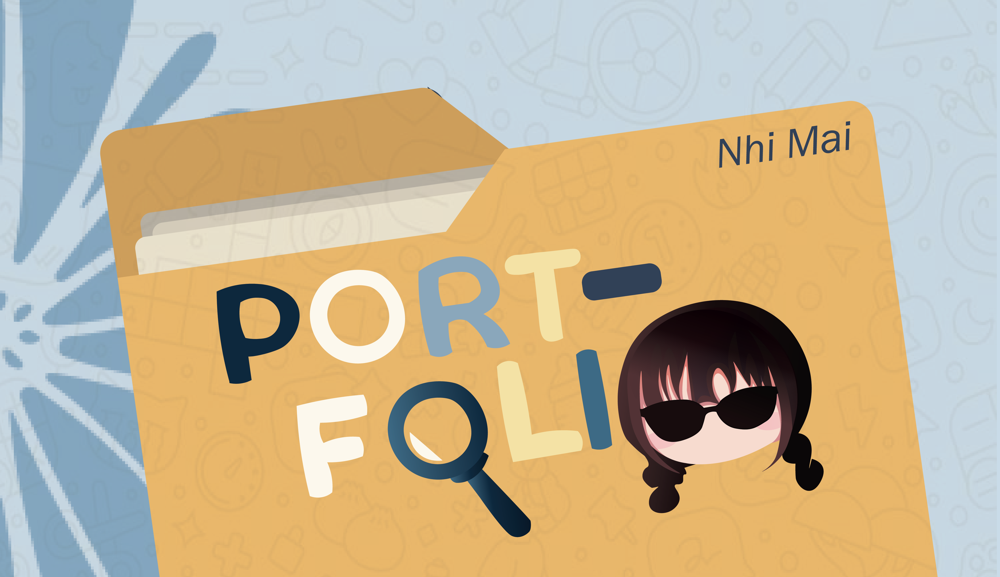
This is a short video about the everyday experiences of college students when deadlines are approaching or during important exam periods. Although it is a short story, it is something that many students can relate to.

A small, playful project that uses oyster crackers to create typography. It shows that typography can go beyond paper or screens and appear in small, everyday objects, making letterforms more creative and fun.
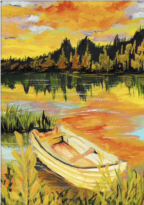
As a nature enthusiast, I am captivated by the fleeting moments of transition in nature. This piece celebrates the magical transformation of light during the golden hour, a time of day that never fails to inspire me.
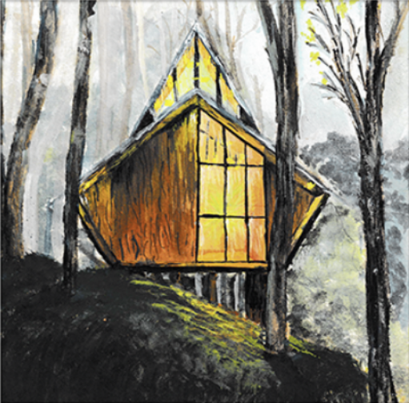
Da Lat, known for its clean and pristine environment, is one of my favorite travel destinations. This painting captures the charm and tranquility of this beloved place, showcasing my appreciation for serene landscapes.
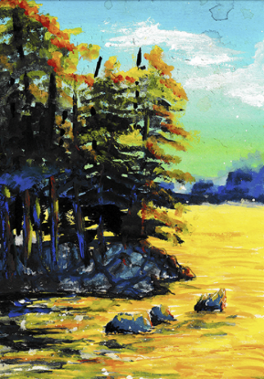
I find profound beauty in the changing colors of the sky and water at sunset. This painting represents the sacred and tranquil moments I cherish while observing nature's palette shift.
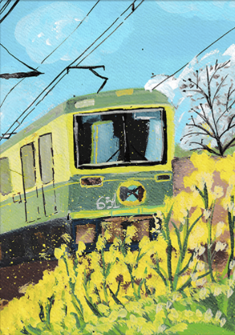
In this painting, I attempted to replicate a work by my aunt, experimenting with different techniques and styles. It represents my eagerness to learn and explore diverse artistic methods.
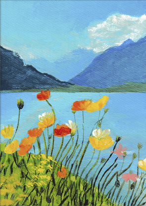
This is the painting that ignited my passion for landscape art. Through it, I discovered my love for depicting serene and positive emotions, aiming to bring a sense of peace and tranquility to viewers.
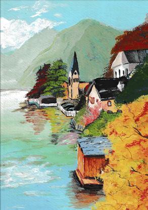
This artwork is an exploration of the harmony between architecture and nature. Inspired by a model, I challenged myself to blend urban elements with natural beauty, showcasing my versatility in artistic styles.
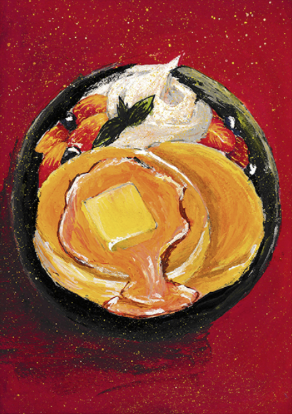
As a foodie, I enjoy exploring and illustrating unique and delectable dishes. This painting reflects my enthusiasm for discovering and savoring new culinary delights.
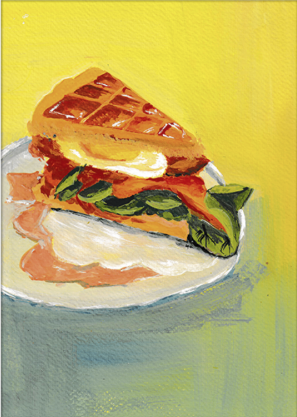
This piece celebrates my favorite morning meal, combining my love for food with my passion for art. It brings to life the simple joys of starting the day with a delicious dish.
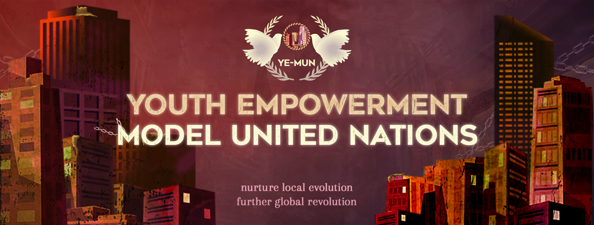
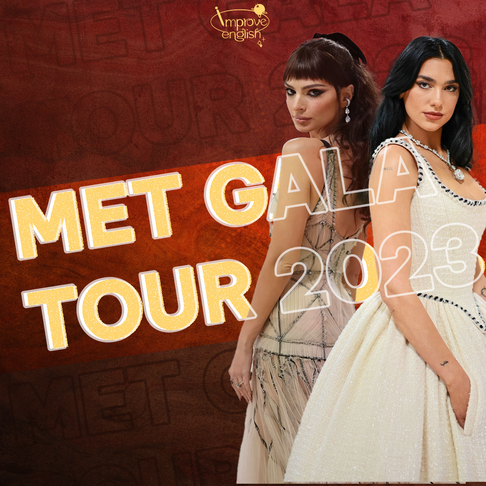


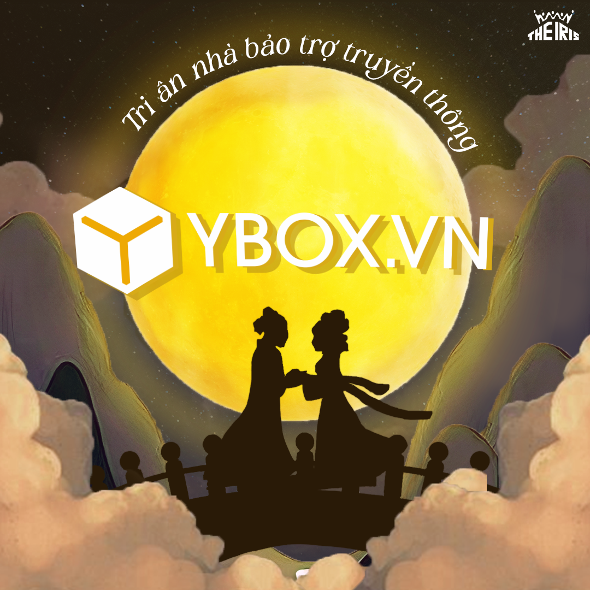


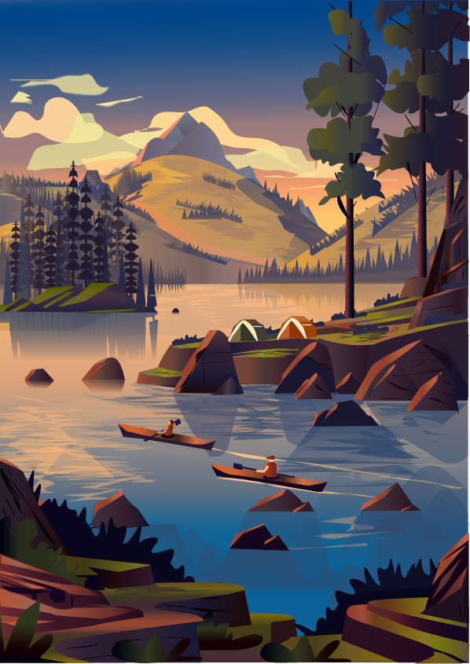

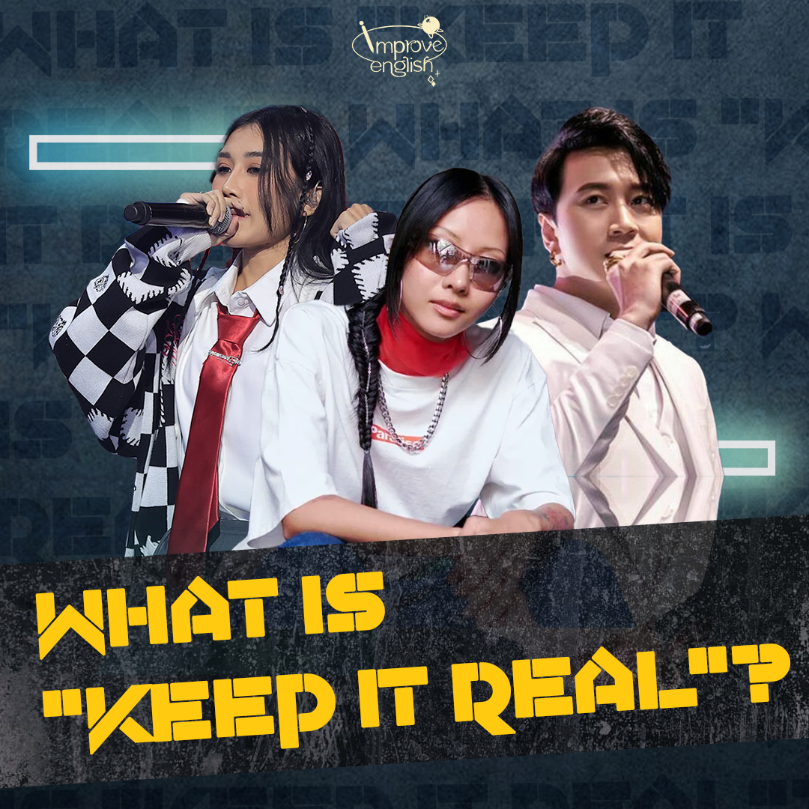
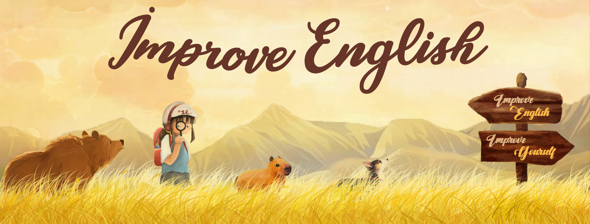
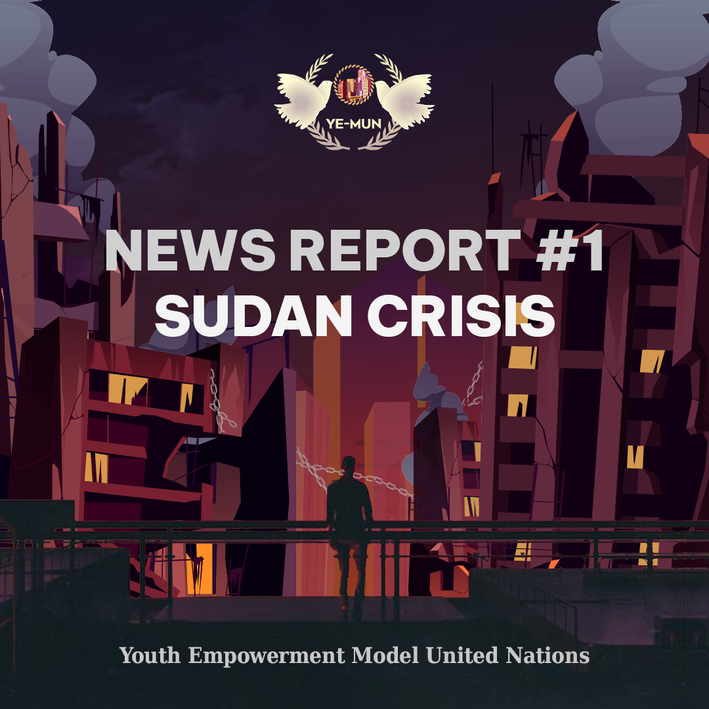

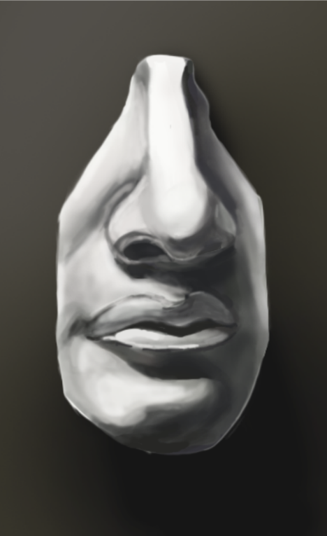


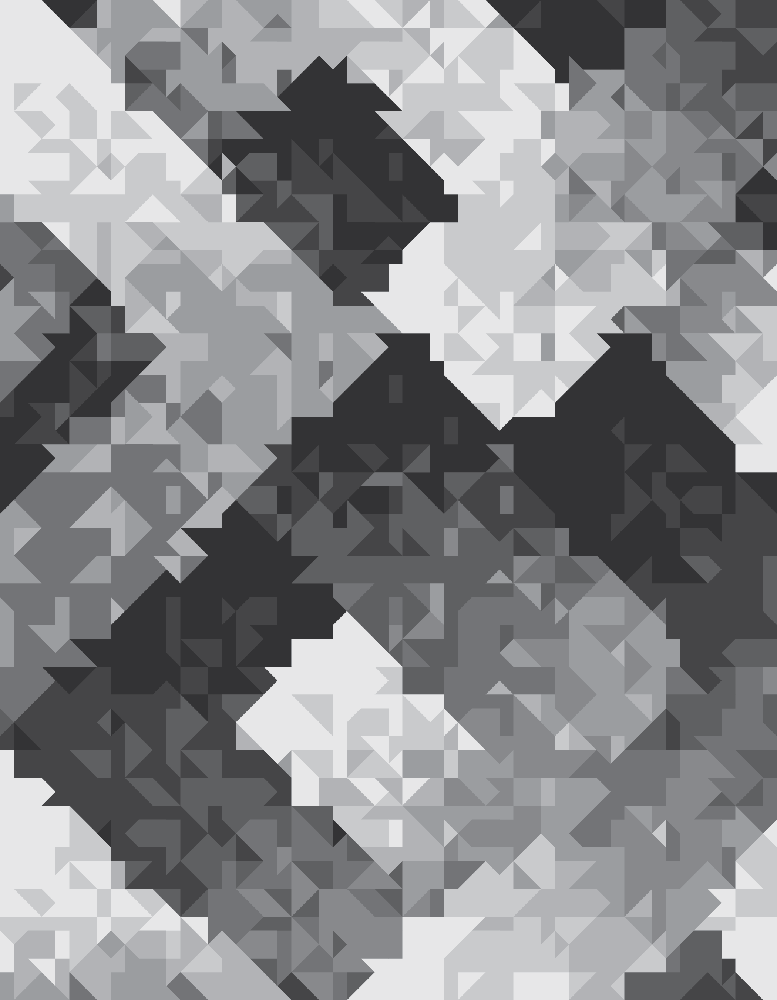
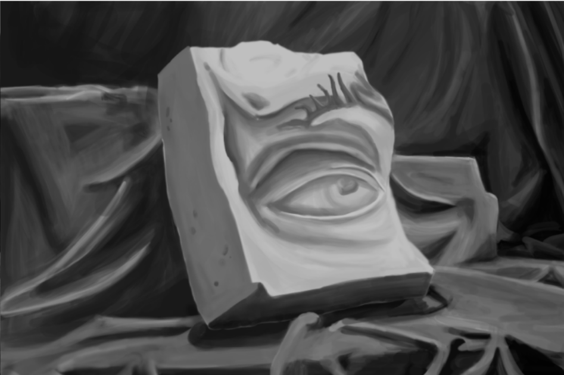
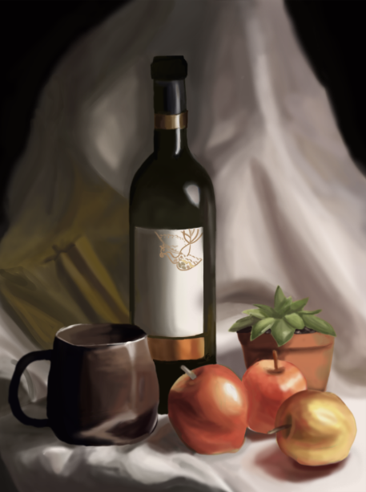